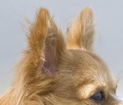
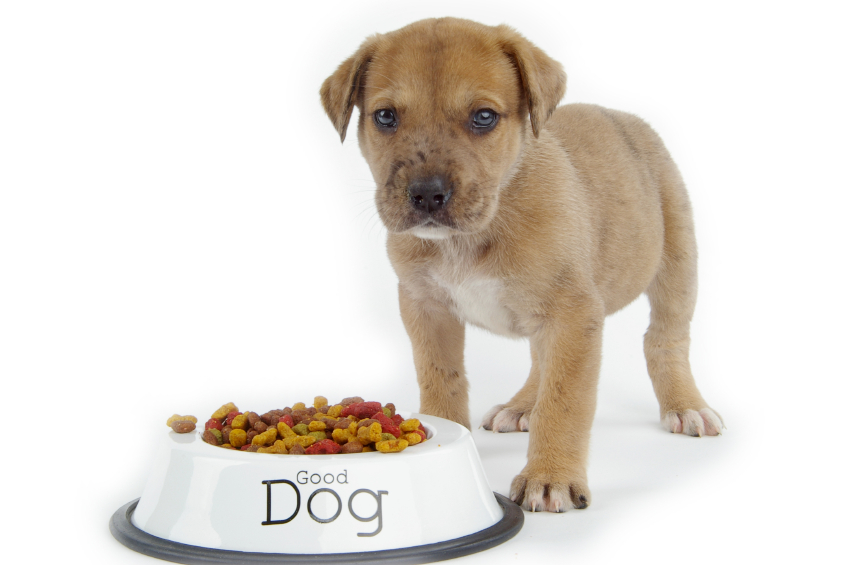

Козина
Домашните кучета често притежават остатъци от противоположни оттенъци, което е често срещанa
естественa камуфлажна шарка. Общата теория за противоположните оттенъци е, че животно осветено
отгоре ще изглежда с по-светла горна половина и по-тъмна долна половина, където обикновено е
със своя естествен оттенък. Това е шарка, която хищниците могат да се научат да търсят.
Животно с противоположна шарка ще бъде с тъмно оцветена горна козина и светло оцветена козина
отдолу. Това намалява видимостта на животното. Един остатък от тази шарка се намира в много
породи под формата на светло петно, ивица или „звезда“ от бяла козина на гърдите или долната
част на тялото. Козината на различни породи изисква различни грижи.
Зрение
Като повечето бозайници кучетата са дихроматични и имат цветно зрение еквивалентно на нарушено
цветозрение червено-зелено при хората. Различните породи кучета имат различна форма и размер
на очите, а имат и различна конфигурация на ретината. Кучетата с дълги носове имат
високочувствителна област от ретината („visual streak“), която се простира по дължината на
ретината и им придава много широко поле на зрение, докато тези с къси носове имат
„area centralis“ — централна област с до три пъти по-голяма чувствителност на нервните окончания
отколкото „visual streak“ — давайки им детайлно зрение приличащо на човешкото. Някои породи
имат поле на зрение до 270° (сравнено с 180° при хората), въпреки че породите с широки глави и
къси носове имат много по-малко поле, достигащо 180°.
Слух

Кучетата могат да разпознават звуци с ниска честота 16 до 20 Hz (за сравнение при хората е 20 до
70 херца) и висока честота над 45 kHz (при хората 13 до 20 kHz), а в допълнение на
това могат да движат ушите си, което им помага бързо да локализират източника на звук. Осемнадесет
и повече мускула могат да накланят, завъртат и повдигат или свалят кучешкото ухо. Кучето може
да идентифицира източника на звук много по-бързо отколкото човек и да чуе звук на четири пъти
по-голямо разстояние, отколкото би могъл човек. Кучетата с естествена форма на ухото по принцип
чуват по-добре от тези с клепнали уши, каквито са ушите на много от домашните видове.
Обоняние
Кучетата имат близо 220 милиона обонятелни клетки на площ от приблизително площта на носна
кърпичка (сравнено с 5 милиона на площ от пощенска марка при хората). Някои породи са селективно
размножавани за много по-добро обоняние, дори и от кучешките си събратя. Каква информация всъщност
получава кучето, когато души, не е добре разучено; отначало дебатирано, сега се е наложило мнението,
че кучетата различават два различни типа миризми при следене, миризма във въздуха от човек или
обект преминал наскоро, и миризмата на почвата, която не се променя за много по-дълго време.
Характеристиките и поведението на тези два типа дири изглеждат различни, въздушната диря бивайки
прекъсната на много места, но не замаскирана от други миризми, докато миризмата на почвата остава
относително постоянна при внимателно и повторно търсене от кучето, но пък много по-податлива на
„замърсяване“ с други миризми! При всеки случай, треньорите на кучета са установили, че е невъзможно
да се дресира куче да следи по-добре, отколкото то го прави естествено. Вместо това задачата е да се
мотивира правилно и да се дресира да поддържа вниманието си върху една единствена следа и да игнорира
всички останали, които иначе биха изглеждали по-интересни за едно недресирано куче. Едно напрегнато
търсене на диря, например при търсене на кораб за контрабанда, може да бъде много изтощително за
кучето, и кучето трябва да бъде мотивирано да продължи тази трудна задача за дълъг период от време.
Метаболизъм при бягане
Кучетата могат да генерират голямо количество енергия за кратък период от време. Кучешкото сърце и
бели дробове са по-големи в сравнение с всекидневните нужди на тялото. Кучето също има сравнително
повече червени кръвни телца в сравнение с човека. През повечето време кучето пази тези допълнителни
кръвни телца в далака си. Когато животното се окаже в ситуация, в която е нужен пълния му
метаболизъм, като например игра или боричкане с други кучета, допълнителните кръвни телца се
освобождават в кръвта. Големите сърце и бели дробове вече ще работят с пълен капацитет и кучето ще
има подобрена възможност за аеробна дейност. Тази дейност ще генерира вътрешна топлина. Кучетата,
бидейки покрити с козина, имат ограничена възможност за охлаждане. След кратко време животното трябва
или да спре атлетичните действия, или рискува да нарани себе си като прегрее. Човек лесно може да
наблюдава този пример на интензивна активност последвана от периоди на почивка при кутретата. По
време на фазата на почивка далакът събира червени кръвни клетки и животното може да диша интензивно,
за да се охлади.
Хранене

Този раздел е празен или е мъниче. Можете да помогнете на Уикипедия като го разширите. Има два
варианта за хранене на кучето:домашно приготвена храна или промишлено произведена, под формата
на гранули, консерви или паучове. В зависимост от възрастта си, кученцата трябва да се храня
до три пъти на ден в определено време. Кучето трябва да има постоянен достъп до чиста питейна вода.
Брой хранения дневно в зависимост от размера на кучето: Дребни породи до 4 месеца-3 хранения; от
4 до 10 месеца-2 храненич; Средни породи до 6 месеца-3 хранения; от 6 до 12 месеца-2 хранения;
Едри и Гигантски породи до 6 месеца-3 хранения;от 6 до 15 месеца-2 хранения
Размножаване
Половата активност при кучетата започва между шестия и осми месец и продължава до десетата и в редки
случай до дванадесет годишна възраст.Кучето има два цикъла на размножителна активност в една
календарна година.Периодът, през време на който половата система на женското животно се подготвя за
оплождане, се характеризира с набъбване (увеличаване обема) на външните полови органи (известен като
разгоненост). Периодът на разгоненост продължава от четири до петнадесет дни. В него се включва и
времето, през което женското животно може да е заплодено. Това продължава от четвъртия до осмия ден.
От 3 до 5-ия ден след започване на този период става отделянето на яйцеклетките от яйчника. При
чифтосването на кучетата мъжкият не може да се раздели с женската веднага след спермоотделянето.
Тази фаза е известна като “заклещване” и може да продължи 20 - 30 минути и дори до 1 час. През време
на заклещването, кучетата не трябва да се безпокоят или да се разделят насилствено. Бременността на
кучката продължава от 58 до 62 и в редки случаи до 65 дни. Кучката кърми малките от 35 до 50 дни.
Интелигентност

Много кучета могат да бъдат дресирани да изпълняват сръчно задачи, които не са присъщи за кучешките
навици, като например в това състезание за кучешка ловкост. Кучетата се ценят за тяхната интелигентност,
която се изразява различно при различните породи и индивиди. Например, граничарските колита са известни
със способността си да заучават команди, докато други породи могат да не бъдат толкова мотивирани да се
подчиняват, но вместо това пък да изразяват интелигентността си чрез измисляне на остроумни начини за
крадене на храна и избягване от двора. Бидейки високо адаптивни животни, кучетата са се научили да
изпълняват множество задачи, изисквани им от човека през поколенията. Кучетата изпълняват много роли из
цялото земно кълбо. Те са незаменими в сфери като търсене и спасяване; ред и сигурност (включително кучета
за атакуване, търсене на миризми и следене); охрана на животни, хора и имущество; помощ за пастири; кучешки
впрягове за арктически експедиции; водачи на слепи и помощници на глухи хора; помощници при лов, както и
много други роли на които могат да бъдат дресирани. На повечето кучета рядко им се налага да се справят
с комплексни задачи и е малко вероятно да се научат на относително сложни дейности (като отваряне на врати)
без допълнителна помощ. Някои кучета (като кучетата водачи на слепи хора) са специално дресирани да
разпознават и избягват опасни ситуации. Едно куче достига интелигентостта на двегодишно дете. Средно
кучетата могат да разберат 150 думи или жестове. Представители на най-умните породи разпознават 250
думи — колкото 2,5-годишно дете.
Оценка на кучешкия интелект
Значението на думата „интелект“ като цяло трудно може да се дефинира, и то не само във връзка с кучетата.
Някои тестове измерват възможността за решаване на проблеми, а други тестват възможността да се учи в
сравнение с други на същата възраст. Дефинирането на това понятие за кучетата също е толкова трудно.
Твърде вероятно е кучетата да нямат възможност обмислят дадено действие, за да решат проблем. Например,
възможността да се учи бързо може да бъде знак за интелигентност. Обратно, това може да бъде интерпретирано
като знак за желание да се угоди. При това някои кучета, които нямат желание да учат бързо, имат други
таланти. Пример за това са породи, които не са особено заинтересовани да угодят на собственика си (например
сибирските хъски). Хъскитата са увлечени с безчетните възможности за бягство от дворове, улавяне на малки
животни, а често и измислянето на множество техни си находчиви начини за правене и на двете. Кучетата водачи
пък е нужно да бъдат покорни при всякакви положения. Това означава, че те трябва да научат огромен брой
команди, да разбират как да действат в многообразие от ситуации, и да разпознават заплахи за техния стопанин,
някои от които кучето може никога преди това да не е срещало. Много собственици на породи кучета-пастири вярват,
че породи като Куваж или Голям Пиреней не са лесно дресируеми поради упорития си нрав, който им пречи да
забележат целта на команди като „седни“ или „легни“. Фоксерите също могат да бъдат причислени към този тип.
Тези кучета са отглеждани да имат по-голям стаден манталитет с другите кучета и по-малко доверие на директните
команди на стопанина. Докато те може би нямат същия вид интелигентност като колитата, те не са оглеждани с
цел научаване и отговаряне на команди, а по-скоро да мислят за себе си докато се дебне дивеча. Кучето е
най-добрият приятел на човека.
Кучетата и хората
Връзката между кучето и човека е древна като самото човечество. След последната ледникова епоха, нашите
прадеди започнали да опитомяват вълчета, които постепенно приели хората като приятели. Оттогава до днес
са създадени над 300 различни породи кучета. Едни от тях се използват за пазачи — ротвайлер, боксер, немска
овчарка, дог. Санбернарите спасяват хора, затрупани от лавини. Нюфаундлендът е воден спасител. Ретривърите
и немските овчарки са кучета-водачи за незрящите. Сетерът, гончето, риджбекът, кокерът, кръвоследникът и пр.
са верни помощници на ловците. Полицейските кучета — немски овчарки, ротвайлери — откриват наркотици, помагат
за залавянето на престъпника. Хъскитата и аляските мейлмути теглят шейните, които са единственото превозно
средство в северните части на Аляска и Канада. Колитата пазят стадата овце от набезите на вълците. Също така
кучетата са мили домашни животни и любимци на децата. Създадени са клубове за отделните породи навсякъде по света.